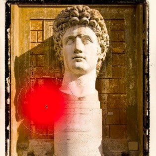
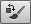

-
Brush tool

The painting tools are all grouped below the selection and move tools. There are some common options available for these tools.
 Category: Painting Tools -
Pencil tool
The pencil can be used to produce hard edged, anti-aliased, pencil-like drawing lines. The pencil tool is simply a fast response sketching tool, that does have some uses, such as creating and editing icons.
Category: Painting Tools -
Mixer brush tool
The mixer brush tool allows you to paint more realistically in Photoshop. With the mixer brush you can mix colors together as you paint, picking up color samples from the image you are painting on and set the rate at which the brush picks up paint from the canvas and the rate at which the paint dries out.
Category: Painting Tools -
Color replacement tool 
The color replacement tool is grouped with the brush and other paint tools in the Tools panel.
Category: Painting Tools -
History brush
Photoshop’s History feature enables you to store multiple image states as you progress through a Photoshop session and work on an individual image.
Category: Painting Tools -
Art History brush
The art history brush samples from a history state, but the art history brush strokes can be applied using abstract characteristics that smudge the pixels when sampling from the selected history state. The brush characteristics are defined in the art history Options bar. The Tolerance determines how much paint to apply based on how close in color the paint strokes will be from the history to the destination color. And as the Area setting is made larger, the area coverage will increase and the paint strokes be more numerous.
Category: Painting Tools -
Gradient tool
The gradient tool can be used to draw linear, radial, angular, reflected or diamond gradients. To use the gradient tool go to the Options bar and click on the gradient ramp.
Category: Painting Tools -
Paint bucket tool
The paint bucket tool amounts to the same as ‘make a magic wand selection based on the sampled color and Tolerance setting in the Options bar and fill the selection with the current foreground color or predefined pattern’.
Category: Painting Tools